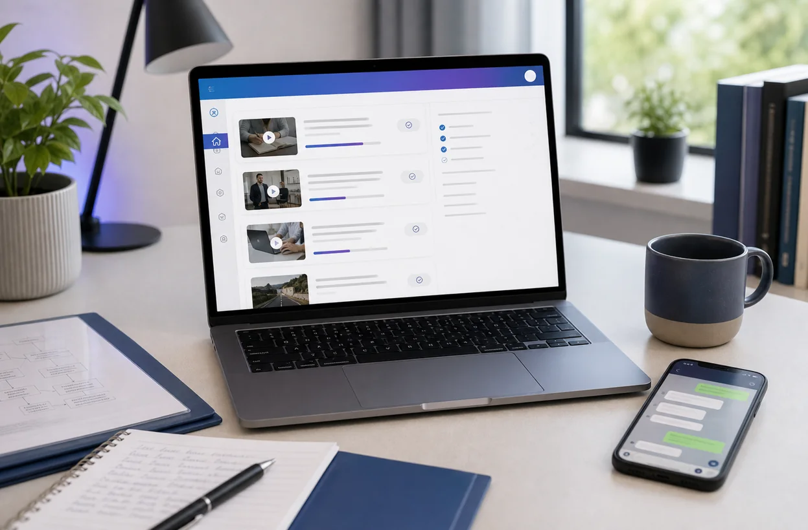
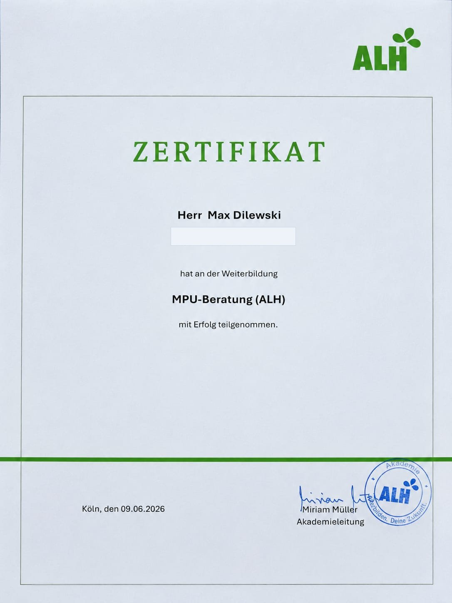
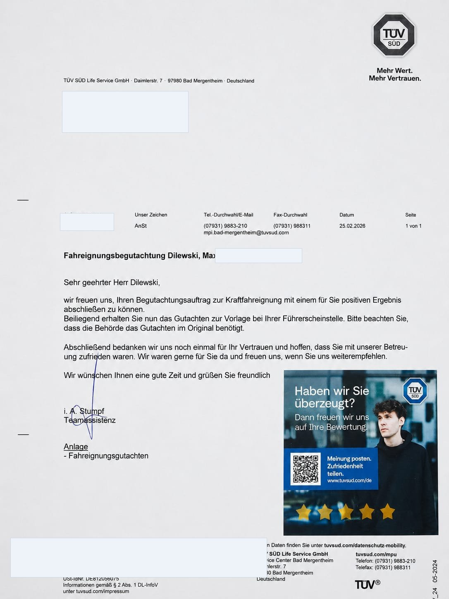

MPU Beratung online in Deutschland
Schnell und strukturiert zurück zum Führerschein.
MPUFIX bringt Ordnung in deinen MPU-Fall: Anlass verstehen, Nachweise planen, Online-Kurs nutzen und im Gespräch klar erklären, was sich wirklich verändert hat.
- Vorbereitung bei Alkohol, Drogen, Cannabis, Punkten und Straftaten
- Online-Raum mit Videos, Checklisten und klaren Schritten
- Persönliche Begleitung möglich, verständlich und Schritt für Schritt

Wir holen dich dort ab, wo du gerade stehst.
Was trifft aktuell auf dich zu?
Wähle den Punkt, der deiner Situation am nächsten kommt. Danach ist klarer, welches Paket und welcher nächste Schritt sinnvoll ist.
Alkohol am Steuer
Promillewert, Trinkmuster, Rückfallvermeidung und Nachweise müssen nachvollziehbar werden.
Fall prüfenCannabis oder Drogen
Substanz, letzter Konsum, Screening, Abstinenz und Aktenlage entscheiden über den Plan.
Fall prüfenPunkte und Verkehrsverstöße
Es geht um Verhalten, Einsicht, neue Regeln und glaubwürdige Veränderung im Alltag.
Fall prüfenTermin steht bald an
Wenn wenig Zeit bleibt, zählt zuerst eine ehrliche Risikoanalyse statt hektisches Auswendiglernen.
Schnell klärenNicht bestanden
Das Gutachten zeigt oft genau, was gefehlt hat. Daraus entsteht der neue Vorbereitungsplan.
Gutachten prüfenUnsicherer Startpunkt?
Wenn du nicht weißt, was du brauchst, starten wir mit einer kurzen Einschätzung.
Erstgespräch buchenNicht schön, aber oft die Realität.
So scheitert MPU-Vorbereitung bei vielen.
Viele starten zu spät, sammeln widersprüchliche Tipps und versuchen dann, im Gespräch perfekt zu wirken. Genau das macht unsicher.
- Antworten werden auswendig gelernt, aber nicht verstanden.
- Nachweise werden zu spät oder falsch geplant.
- Die eigene Geschichte wirkt im Gespräch nicht glaubwürdig.
- Alte Fehler werden erklärt, aber nicht sauber aufgearbeitet.

Mehr als Videos schauen.
Das eigentliche Problem ist nicht die MPU, sondern fehlende Vorbereitung.
MPUFIX arbeitet mit einem einfachen System: Fall verstehen, Nachweise planen, Veränderung herausarbeiten und das Gespräch üben.
Dein roter Faden für die MPU
- klare Einordnung deines MPU-Anlasses
- realistische Einschätzung ohne falsche Garantie
- Vorbereitung auf kritische Rückfragen
- Unterlagen, Aufgaben und Videos an einem Ort
MPUFIX ist dein digitales Vorbereitungssystem.
Ein zusätzliches Vorbereitungsteam, nur online.
Der Online-Raum gibt dir Struktur. Die Gespräche sorgen dafür, dass deine Vorbereitung nicht allgemein bleibt, sondern zu deinem Fall passt.
Fallanalyse
Anlass, Aktenlage, Fristen und mögliche Risiken werden geordnet.
Nachweisplan
Wir klären, ob Abstinenz, Screening oder weitere Unterlagen wichtig sind.
Videomodule
Du arbeitest die wichtigsten MPU-Themen Schritt für Schritt im Online-Raum durch.
Gesprächstraining
Du übst, deine Veränderung ruhig, konkret und nachvollziehbar zu erklären.
Mehr Überblick, mehr Ruhe, bessere Vorbereitung.
So verändert sich dein MPU-Alltag.
Ohne MPUFIX
- du sammelst Tipps aus Foren und Videos
- du weißt nicht, ob Nachweise fehlen
- du lernst Antworten, statt deinen Fall zu verstehen
- du gehst mit Restunsicherheit in das Gespräch
Mit MPUFIX
- dein Fall wird strukturiert eingeordnet
- du bekommst klare Aufgaben und Videomodule
- du bereitest konkrete Rückfragen vor
- du weißt, was du realistisch verbessern musst
Vertrauen ohne Show.
Erfolg soll belegbar sein, nicht behauptet.
Bestandene Gutachten, Zertifikate und Teilnehmerbilder werden nur mit ausdrücklicher Einwilligung veröffentlicht. Bis diese echten Nachweise freigegeben sind, zeigt MPUFIX transparent, wie Vorbereitung dokumentiert wird.
Beispielweg Alkohol-MPUErst Promillewert und Vorgeschichte klären, dann Trinkverhalten aufarbeiten, Rückfallstrategie entwickeln und die Veränderung im Gespräch sauber erklären.
Beispielweg Cannabis-MPULetzten Konsum, Abstinenz, Screening und Aktenlage prüfen. Danach wird die Distanzierung konkret vorbereitet.

Checklisten, Gesprächsnotizen, Aufgaben und Nachweisplanung werden nachvollziehbar geordnet.
Echte Nachweise
Zertifikat und eigene MPU-Erfahrung bekommen einen festen Platz.
Dieser Bereich ist vorbereitet für deine echten Unterlagen. Sobald Zertifikat, bestandene Prüfung oder weitere Nachweise vorliegen, werden sie sauber eingefügt, erklärt und nicht künstlich übertrieben.
{kind=link}

VergrößernQualifikation
Geprüfte Weiterbildung für professionelle MPU-Beratung.
Max Dilewski hat die Weiterbildung „MPU-Beratung (ALH)“ erfolgreich abgeschlossen. Der Nachweis schafft Vertrauen, ersetzt aber keine unseriösen Bestehensversprechen.
{kind=link}

VergrößernEigene Erfahrung
Nicht nur Theorie: eigene MPU erfolgreich geschafft.
Der Nachweis zeigt eine positiv abgeschlossene Fahreignungsbegutachtung. Genau deshalb wird die Vorbereitung bei MPUFIX praxisnah, ehrlich und ohne falsche Versprechen aufgebaut.
Beispielhafte Erfolgswege
Zurück hinterm Steuer: beispielhafte Erfolgswege.
Diese Verläufe sind bewusst als Beispiele aufgebaut und keine erfundenen echten Kundenbewertungen. Echte Referenzen setzen wir später nur mit Freigabe und Nachweis ein.
Alkohol-MPU
Vom Durcheinander zum klaren Trinkmuster.
Der Fokus lag auf Vorgeschichte, Auslösern, Rückfallstrategie und einer ruhigen Erklärung im Gespräch.
- Trinkverhalten strukturiert aufgearbeitet
- Nachweise und Gesprächslogik geordnet
- finale Vorbereitung auf kritische Rückfragen
Cannabis oder Drogen
Nachweise früh geklärt, Vorbereitung gezielt aufgebaut.
Entscheidend war nicht Auswendiglernen, sondern eine nachvollziehbare Distanzierung und klare Aktenlage.
- Konsumverlauf verständlich eingeordnet
- Screening und Abstinenzplan geprüft
- eigene Veränderung konkret formuliert
Punkte-MPU
Aus Verkehrsfehlern wurde ein neuer Fahrplan.
Im Mittelpunkt standen Einsicht, Risikomuster und konkrete neue Regeln für den Alltag im Straßenverkehr.
- Fehlverhalten ohne Ausreden analysiert
- neue Routinen und Regeln aufgebaut
- Gespräch auf Verantwortung trainiert
Pakete
Wähle den Umfang, der zu deinem Fall passt.
Alle Pakete setzen auf ehrliche Vorbereitung. Je komplexer der Fall, desto wichtiger ist persönliche Begleitung.
Online-Raum
Videozugang
399 €Für Menschen, die selbstständig lernen wollen und einen klaren Fahrplan brauchen.
- 6 Monate Zugang
- Videomodule und Checklisten
- Grundlagen für Alkohol, Drogen, Punkte und Ablauf
Beliebter Einstieg
Video plus 2 Gespräche
899 €Für dich, wenn du nicht nur lernen, sondern deinen eigenen Fall sauber vorbereiten willst.
- Online-Raum für 6 Monate
- 2 persönliche Online-Gespräche
- individuelle Vorlage für deine Vorbereitung
- Finaler Check vor dem Termin
Intensiv
10 Online-Termine
1.999 €Für komplexe Fälle, nicht bestandene MPU oder wenn du eng begleitet werden willst.
- Online-Raum inklusive
- 10 persönliche Online-Termine
- intensive Aufarbeitung und Gesprächstraining
- Unterlagen- und Nachweischeck
Gratis MPU-Check
Schnell zum nächsten sinnvollen Schritt.
Beantworte vier kurze Fragen und du bekommst sofort eine erste Orientierung, was dein nächster sinnvoller Schritt ist. Keine Diagnose, keine Garantie, aber deutlich mehr Klarheit.
- zeigt, ob Videozugang reicht oder persönliche Begleitung sinnvoller ist
- macht Nachweise, Terminrisiko und Aktenlage sichtbar
- führt direkt zu einer besseren WhatsApp-Ersteinschätzung
Warum musst du zur MPU?
Steht dein MPU-Termin schon fest?
Gibt es bereits Abstinenznachweise oder Screenings?
Wurde deine Akte oder ein negatives Gutachten schon geprüft?
SEO & Wissen
Hilfreiche Inhalte für deine MPU-Fragen.
Der Blog ist wichtig für Google, aber noch wichtiger für Vertrauen. Deshalb stehen dort echte Fragen, klare Antworten und keine Keyword-Spam-Texte.
MPU Ablauf in Deutschland
Was passiert vor, während und nach der MPU?
Artikel lesenAbstinenznachweis bei der MPU
Wann Nachweise wichtig werden und warum frühe Planung zählt.
Artikel lesenMPU Kosten realistisch planen
Welche Kosten neben der Vorbereitung entstehen können.
Artikel lesenHäufige Fragen
Was du vor dem Start wissen solltest.
Kann ich die MPU garantiert bestehen?
Nein. Eine Garantie wäre unseriös. Vorbereitung kann dir helfen, deinen Fall zu verstehen, echte Veränderung nachvollziehbar zu machen und typische Fehler zu vermeiden.
Ist die Beratung nur für Deutschland?
Ja. MPUFIX konzentriert sich auf die MPU in Deutschland und nicht auf Österreich oder die Schweiz.
Wie lange habe ich Zugriff auf die Videos?
Der Online-Raum ist für 6 Monate vorgesehen. In dieser Zeit kannst du die Videos, Checklisten und Aufgaben nutzen.
Wann brauche ich persönliche Gespräche?
Wenn dein Fall komplex ist, dein Termin bald ansteht, Nachweise unklar sind oder du schon einmal nicht bestanden hast, sind persönliche Gespräche meistens sinnvoller als nur Videos.
Nächster Schritt
Lass uns gemeinsam auf deinen Fall schauen.
Schreib kurz, warum du zur MPU musst, ob schon ein Termin steht und ob Nachweise vorhanden sind. Danach bekommst du eine ehrliche erste Einschätzung.